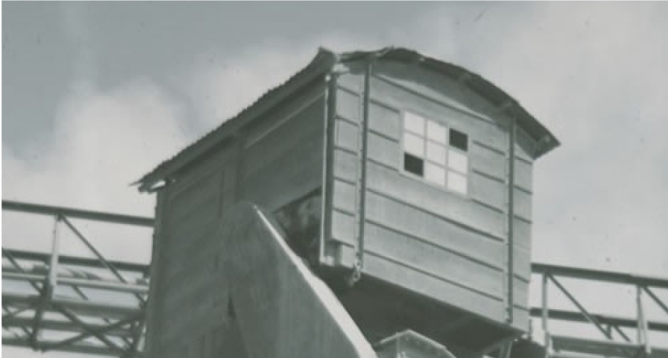
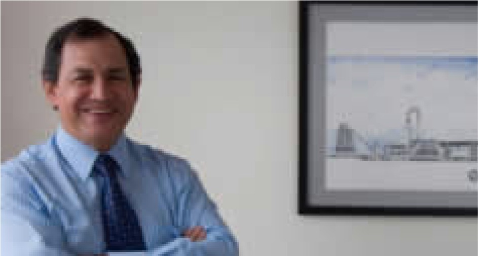
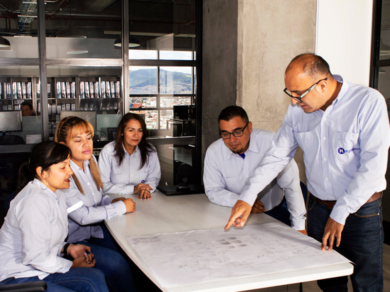
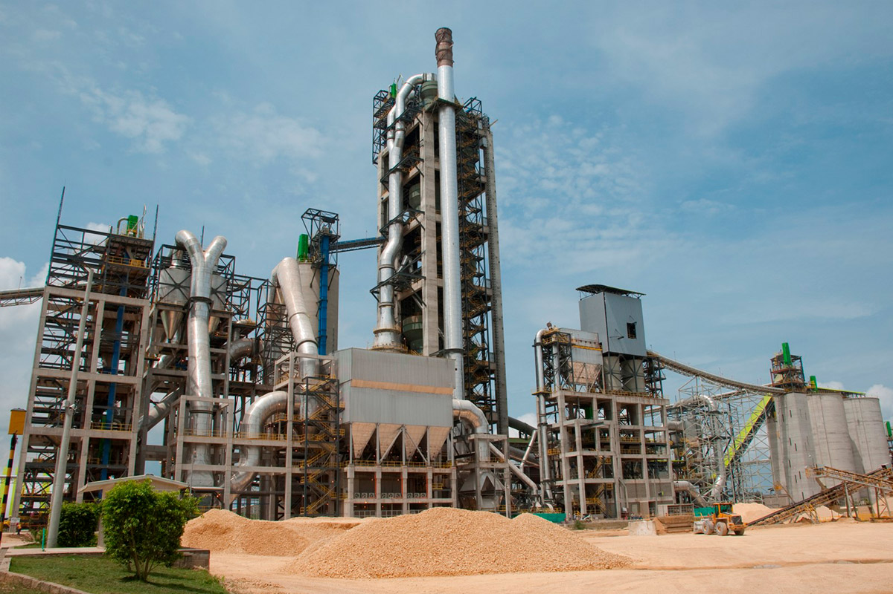

1A · PuenteRecomendadaSe mantiene el blanco con el lema; la foto cambia sola (fundido + acercamiento lento) y cruza la costura hacia la tira azul: la unión deja de ser un corte.
GRUPO HLQuiénes somosProyectosServiciosGestión integralNoticiasContacto
Construimos la industria con gente que cumple, desde 1968.
Somos el Grupo HL, antes HL Ingenieros: una compañía con experiencia desde 1968 en el mercado nacional e internacional, con proyectos en energía, aguas, minería, cemento, petróleo y gas, industria e infraestructura.
Ofrecemos soluciones completas de construcción que integran obras civiles y montajes electromecánicos, con un mismo equipo responsable de principio a fin.




Archivo HL1968
196801/06 · Década de los 60
1B · Lámina oscuraEl recibimiento ya es azul noche, como la tira: fotos a sangre que se funden detrás del lema, en blanco. Más dramático; la página arranca oscura.
GRUPO HLQuiénes somosProyectosServiciosGestión integralNoticiasContacto
Construimos la industria con gente que cumple, desde 1968.
Somos el Grupo HL, antes HL Ingenieros: una compañía con experiencia desde 1968 en el mercado nacional e internacional.
Planta Columbus · Cartagena · Hoy
196801/06 · Década de los 60
3A · Tres normas, un sistemaRecomendadaLos tres anillos ISO se trazan y se cruzan en el centro: el "bajo un solo sistema" del título, dibujado. Sin foto, liviano (SVG).
GRUPO HLQuiénes somosProyectosServiciosGestión integralNoticiasContacto
Calidad, seguridad y ambiente bajo un solo sistema
Sistema de gestión integral del Grupo HL: certificaciones ISO 9001, ISO 14001 e ISO 45001, indicadores de seguridad, política, Reglas de Oro HSE, PIENSA® y herramientas de gestión.
3B · Foto de obraMedia pantalla con foto de equipo en obra (acercamiento lento) y los tres sellos encima. Depende de tener una buena foto reciente.
GRUPO HLQuiénes somosProyectosServiciosGestión integralNoticiasContacto
Calidad, seguridad y ambiente bajo un solo sistema
Sistema de gestión integral del Grupo HL: certificaciones ISO 9001, ISO 14001 e ISO 45001, indicadores de seguridad, política, Reglas de Oro HSE, PIENSA® y herramientas de gestión.
ISO 9001ISO 14001ISO 45001
5 · Herramientas como diagramaCuatro módulos conectados a Microsoft 365, que los atraviesa a todos. Los pulsos suben de la base a cada módulo. Logos en espera (por confirmar con TI que se pueden mostrar).
Herramientas tecnológicas de gestión
Cada frente del negocio tiene su sistema, y todos trabajan sobre la misma base de colaboración.
01 · Gestión de obra
Procore
Planos, RFI, reportes diarios y seguimiento de cada proyecto en campo.
02 · ERP
Libra
Finanzas, compras, inventarios y nómina del grupo.
03 · Comercial
Zoho CRM
Oportunidades, clientes y seguimiento de cotizaciones.
04 · Presupuestos
Opus
Presupuestos, análisis de precios unitarios y control de costos de obra.
Microsoft 365
Transversal · ColaboraciónCorreo, documentos, Teams y trabajo compartido entre oficina y obra.
OutlookTeamsSharePointOneDrive
En el sitio: el diagrama se lee igual sin animación; en móvil los módulos van en 2 × 2 y la base debajo, sin conectores.